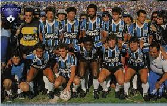
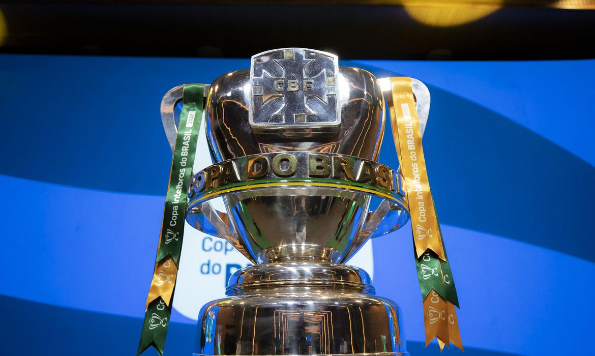

Bom,temos no brasil um campeonato muito importante para o nosso pais chamado copa do brasil
nele temos muitos times brasileiros que ja foram campeoes muitas vezes.
temos como referencia o cruzeiro, um time de minas gerais que contem 6 copas do brasil seguido do gremio com 5

A Copa do Brasil foi criada para aplacar o descontentamento das federações de estados com menor tradição no futebol nacional
